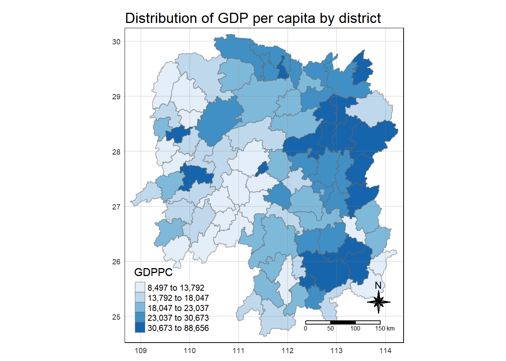

pacman::p_load(tidyverse, tmap, sf, sfdep)1 Getting Started
1.1 Installing and Loading Packages
Pacman assists us by helping us load R packages that we require, sf, sfdep, tidyverse and tmap.
1.2 Data Acquisition
The following datasets are used:
| Dataset Name | Source |
|---|---|
| Hunan (Hunan.shp) | Prof Kam |
| Hunan 2021 (Hunan-2021.csv) | Prof Kam |
2 Spatial Data Wrangling
2.1 Importing Spatial Data
We will use st_read() of sf package to import the three geospatial datasets.
hunan <- st_read(dsn = "In-Class_Ex06/data/geospatial", layer = "hunan")Reading layer `hunan' from data source
`C:\renjie-teo\IS415-GAA\exercises\In-Class_Ex06\data\geospatial'
using driver `ESRI Shapefile'
Simple feature collection with 88 features and 7 fields
Geometry type: POLYGON
Dimension: XY
Bounding box: xmin: 108.7831 ymin: 24.6342 xmax: 114.2544 ymax: 30.12812
Geodetic CRS: WGS 84hunan_2012 <- read_csv("In-Class_Ex06/data/aspatial/Hunan_2012.csv")Rows: 88 Columns: 29
── Column specification ────────────────────────────────────────────────────────
Delimiter: ","
chr (2): County, City
dbl (27): avg_wage, deposite, FAI, Gov_Rev, Gov_Exp, GDP, GDPPC, GIO, Loan, ...
ℹ Use `spec()` to retrieve the full column specification for this data.
ℹ Specify the column types or set `show_col_types = FALSE` to quiet this message.2.2 Combining both data frame by using left join
hunan_GDPPC <- left_join(hunan, hunan_2012) %>%
select(1:4, 7, 15)Joining, by = "County"If two columns have the same name, they will automatically be joined, else, the following code has to be specified after the dataframes to be joined. A == B
3 Plotting a Chloropleth Map
tmap_mode("plot")tmap mode set to plottingtm_shape(hunan_GDPPC) +
tm_fill("GDPPC",
style = "quantile",
palette = "Blues",
title = "GDPPC") +
tm_layout(main.title = "Distribution of GDP per capita by district",
main.title.position = "center",
main.title.size = 1.2,
legend.height = 0.45,
legend.width = 0.35,
frame = TRUE) +
tm_borders(alpha = 0.5) +
tm_compass(type="8star", size = 2) +
tm_scale_bar() +
tm_grid(alpha = 0.2)
4 Identify Area Neighbours
Before a spatial weight matrix can be derived, the neighbours need to be identified first.
4.1 Contiguity Neighbours Methods
4.1.1 Queen’s Method
In the code chunk below st_contiguity() is used to derive a contiguity neighbour list by using Queen’s method.
nb_queen <- hunan_GDPPC %>%
mutate(nb = st_contiguity(geometry),
.before = 1)The code chunk below prints the neighbours found using the Queen’s method:
summary(nb_queen)Neighbour list object:
Number of regions: 88
Number of nonzero links: 448
Percentage nonzero weights: 5.785124
Average number of links: 5.090909
Link number distribution:
1 2 3 4 5 6 7 8 9 11
2 2 12 16 24 14 11 4 2 1
2 least connected regions:
30 65 with 1 link
1 most connected region:
85 with 11 links nb NAME_2 ID_3 NAME_3
NULL:NULL Length:88 Min. :21098 Length:88
Class :character 1st Qu.:21125 Class :character
Mode :character Median :21150 Mode :character
Mean :21150
3rd Qu.:21174
Max. :21201
ENGTYPE_3 County GDPPC geometry
Length:88 Length:88 Min. : 8497 POLYGON :88
Class :character Class :character 1st Qu.:14566 epsg:4326 : 0
Mode :character Mode :character Median :20433 +proj=long...: 0
Mean :24405
3rd Qu.:27224
Max. :88656 4.1.2 Rook’s Method
nb_rook <- hunan_GDPPC %>%
mutate(nb = st_contiguity(geometry, queen = FALSE),
.before = 1)The code chunk below prints the neighbours found using the Rook’s method:
summary(nb_rook)Neighbour list object:
Number of regions: 88
Number of nonzero links: 440
Percentage nonzero weights: 5.681818
Average number of links: 5
Link number distribution:
1 2 3 4 5 6 7 8 9 10
2 2 12 20 21 14 11 3 2 1
2 least connected regions:
30 65 with 1 link
1 most connected region:
85 with 10 links nb NAME_2 ID_3 NAME_3
NULL:NULL Length:88 Min. :21098 Length:88
Class :character 1st Qu.:21125 Class :character
Mode :character Median :21150 Mode :character
Mean :21150
3rd Qu.:21174
Max. :21201
ENGTYPE_3 County GDPPC geometry
Length:88 Length:88 Min. : 8497 POLYGON :88
Class :character Class :character 1st Qu.:14566 epsg:4326 : 0
Mode :character Mode :character Median :20433 +proj=long...: 0
Mean :24405
3rd Qu.:27224
Max. :88656 5 Computing Contiguity Weights
5.1 Contiguity Weights: Queen’s Method
wm_q <- hunan_GDPPC %>%
mutate(nb = st_contiguity(geometry),
wt = st_weights(nb),
.before = 1)wm_qSimple feature collection with 88 features and 8 fields
Geometry type: POLYGON
Dimension: XY
Bounding box: xmin: 108.7831 ymin: 24.6342 xmax: 114.2544 ymax: 30.12812
Geodetic CRS: WGS 84
First 10 features:
nb
1 2, 3, 4, 57, 85
2 1, 57, 58, 78, 85
3 1, 4, 5, 85
4 1, 3, 5, 6
5 3, 4, 6, 85
6 4, 5, 69, 75, 85
7 67, 71, 74, 84
8 9, 46, 47, 56, 78, 80, 86
9 8, 66, 68, 78, 84, 86
10 16, 17, 19, 20, 22, 70, 72, 73
wt
1 0.2, 0.2, 0.2, 0.2, 0.2
2 0.2, 0.2, 0.2, 0.2, 0.2
3 0.25, 0.25, 0.25, 0.25
4 0.25, 0.25, 0.25, 0.25
5 0.25, 0.25, 0.25, 0.25
6 0.2, 0.2, 0.2, 0.2, 0.2
7 0.25, 0.25, 0.25, 0.25
8 0.1428571, 0.1428571, 0.1428571, 0.1428571, 0.1428571, 0.1428571, 0.1428571
9 0.1666667, 0.1666667, 0.1666667, 0.1666667, 0.1666667, 0.1666667
10 0.125, 0.125, 0.125, 0.125, 0.125, 0.125, 0.125, 0.125
NAME_2 ID_3 NAME_3 ENGTYPE_3 County GDPPC
1 Changde 21098 Anxiang County Anxiang 23667
2 Changde 21100 Hanshou County Hanshou 20981
3 Changde 21101 Jinshi County City Jinshi 34592
4 Changde 21102 Li County Li 24473
5 Changde 21103 Linli County Linli 25554
6 Changde 21104 Shimen County Shimen 27137
7 Changsha 21109 Liuyang County City Liuyang 63118
8 Changsha 21110 Ningxiang County Ningxiang 62202
9 Changsha 21111 Wangcheng County Wangcheng 70666
10 Chenzhou 21112 Anren County Anren 12761
geometry
1 POLYGON ((112.0625 29.75523...
2 POLYGON ((112.2288 29.11684...
3 POLYGON ((111.8927 29.6013,...
4 POLYGON ((111.3731 29.94649...
5 POLYGON ((111.6324 29.76288...
6 POLYGON ((110.8825 30.11675...
7 POLYGON ((113.9905 28.5682,...
8 POLYGON ((112.7181 28.38299...
9 POLYGON ((112.7914 28.52688...
10 POLYGON ((113.1757 26.82734...5.2 Contiguity Weights: Rook’s Method
wm_r <- hunan_GDPPC %>%
mutate(nb = st_contiguity(geometry, queen = FALSE),
wt = st_weights(nb),
.before = 1)wm_rSimple feature collection with 88 features and 8 fields
Geometry type: POLYGON
Dimension: XY
Bounding box: xmin: 108.7831 ymin: 24.6342 xmax: 114.2544 ymax: 30.12812
Geodetic CRS: WGS 84
First 10 features:
nb
1 3, 4, 57, 85
2 57, 58, 78, 85
3 1, 4, 5, 85
4 1, 3, 5, 6
5 3, 4, 6, 85
6 4, 5, 69, 75, 85
7 67, 71, 74, 84
8 9, 46, 47, 56, 78, 80, 86
9 8, 66, 68, 78, 84, 86
10 16, 19, 20, 22, 70, 72, 73
wt
1 0.25, 0.25, 0.25, 0.25
2 0.25, 0.25, 0.25, 0.25
3 0.25, 0.25, 0.25, 0.25
4 0.25, 0.25, 0.25, 0.25
5 0.25, 0.25, 0.25, 0.25
6 0.2, 0.2, 0.2, 0.2, 0.2
7 0.25, 0.25, 0.25, 0.25
8 0.1428571, 0.1428571, 0.1428571, 0.1428571, 0.1428571, 0.1428571, 0.1428571
9 0.1666667, 0.1666667, 0.1666667, 0.1666667, 0.1666667, 0.1666667
10 0.1428571, 0.1428571, 0.1428571, 0.1428571, 0.1428571, 0.1428571, 0.1428571
NAME_2 ID_3 NAME_3 ENGTYPE_3 County GDPPC
1 Changde 21098 Anxiang County Anxiang 23667
2 Changde 21100 Hanshou County Hanshou 20981
3 Changde 21101 Jinshi County City Jinshi 34592
4 Changde 21102 Li County Li 24473
5 Changde 21103 Linli County Linli 25554
6 Changde 21104 Shimen County Shimen 27137
7 Changsha 21109 Liuyang County City Liuyang 63118
8 Changsha 21110 Ningxiang County Ningxiang 62202
9 Changsha 21111 Wangcheng County Wangcheng 70666
10 Chenzhou 21112 Anren County Anren 12761
geometry
1 POLYGON ((112.0625 29.75523...
2 POLYGON ((112.2288 29.11684...
3 POLYGON ((111.8927 29.6013,...
4 POLYGON ((111.3731 29.94649...
5 POLYGON ((111.6324 29.76288...
6 POLYGON ((110.8825 30.11675...
7 POLYGON ((113.9905 28.5682,...
8 POLYGON ((112.7181 28.38299...
9 POLYGON ((112.7914 28.52688...
10 POLYGON ((113.1757 26.82734...6 Distance Based Weights
There are three popular distance-based spatial weights that are being used:
- Fixed distance weights
- Adaptive distance weights
- Inverse distance weights (IDW)
6.1 Deriving Fixed Distance Weights
Before we can derive the fixed distance weights, we need to determine the upper limit for distance band using the code chunk below
geo <- sf::st_geometry((hunan_GDPPC))
nb <- st_knn(geo, longlat = TRUE)! Polygon provided. Using point on surface.Warning in st_point_on_surface.sfc(geometry): st_point_on_surface may not give
correct results for longitude/latitude datadists <- unlist(st_nb_dists(geo, nb))! Polygon provided. Using point on surface.Warning in st_point_on_surface.sfc(geometry): st_point_on_surface may not give
correct results for longitude/latitude dataFrom the code chunk above, we can know that:
st_nb_dists() of sfdep is used to calculate nearest neighbour distance. It outputs a list of distances for each observation’s neighbours list.
unlist() of Base R is used to return output as vector so the summary statistics of nearest neighbour distances can be derived
Now, let’s derived the summary statistics of nearest neighbour distances vector (ie. dists) by using the code chunk below:
summary(dists) Min. 1st Qu. Median Mean 3rd Qu. Max.
21.56 29.11 36.89 37.34 43.21 65.80 From the code chunk above, we know that the maximum nearest neighbour distance is 65.80km. By using a threshold value of 66km, we can ensure that each area has at least one neighbour.
Now, we will go ahead to compute the fixed distance weights using the code chunk below.
wm_fd <- hunan_GDPPC %>%
mutate(nb = st_dist_band(geometry, upper = 66),
wt = st_weights(nb),
.before = 1)! Polygon provided. Using point on surface.Warning in st_point_on_surface.sfc(geometry): st_point_on_surface may not give
correct results for longitude/latitude dataFrom the code above, we can know that:
st_dists_band() of sfdep is used to identity neighbours based on a distance band. Output is a list of neighbours
st_weights() is used to calculate polygon spatial weights of nb list.
the default style argument is set to “W” for row standardised weights and
the default allow_zero is set to TRUE, assigns zero as lagged value to zone without neighbours
Let us examine the dataframe of the fixed distance weights
wm_fdSimple feature collection with 88 features and 8 fields
Geometry type: POLYGON
Dimension: XY
Bounding box: xmin: 108.7831 ymin: 24.6342 xmax: 114.2544 ymax: 30.12812
Geodetic CRS: WGS 84
First 10 features:
nb
1 2, 3, 4, 5, 57, 64
2 1, 57, 58, 78, 85
3 1, 4, 5, 57
4 1, 3, 5, 6
5 1, 3, 4, 6, 69
6 4, 5, 69
7 67, 71, 84
8 9, 46, 47, 78, 80
9 8, 46, 66, 68, 84, 86
10 16, 20, 22, 70, 72, 73
wt NAME_2
1 0.1666667, 0.1666667, 0.1666667, 0.1666667, 0.1666667, 0.1666667 Changde
2 0.2, 0.2, 0.2, 0.2, 0.2 Changde
3 0.25, 0.25, 0.25, 0.25 Changde
4 0.25, 0.25, 0.25, 0.25 Changde
5 0.2, 0.2, 0.2, 0.2, 0.2 Changde
6 0.3333333, 0.3333333, 0.3333333 Changde
7 0.3333333, 0.3333333, 0.3333333 Changsha
8 0.2, 0.2, 0.2, 0.2, 0.2 Changsha
9 0.1666667, 0.1666667, 0.1666667, 0.1666667, 0.1666667, 0.1666667 Changsha
10 0.1666667, 0.1666667, 0.1666667, 0.1666667, 0.1666667, 0.1666667 Chenzhou
ID_3 NAME_3 ENGTYPE_3 County GDPPC geometry
1 21098 Anxiang County Anxiang 23667 POLYGON ((112.0625 29.75523...
2 21100 Hanshou County Hanshou 20981 POLYGON ((112.2288 29.11684...
3 21101 Jinshi County City Jinshi 34592 POLYGON ((111.8927 29.6013,...
4 21102 Li County Li 24473 POLYGON ((111.3731 29.94649...
5 21103 Linli County Linli 25554 POLYGON ((111.6324 29.76288...
6 21104 Shimen County Shimen 27137 POLYGON ((110.8825 30.11675...
7 21109 Liuyang County City Liuyang 63118 POLYGON ((113.9905 28.5682,...
8 21110 Ningxiang County Ningxiang 62202 POLYGON ((112.7181 28.38299...
9 21111 Wangcheng County Wangcheng 70666 POLYGON ((112.7914 28.52688...
10 21112 Anren County Anren 12761 POLYGON ((113.1757 26.82734...6.2 Deriving Adaptive Distance Weights
wm_ad <- hunan_GDPPC %>%
mutate(nb = st_knn(geometry,
k = 8),
wt = st_weights(nb),
.before = 1)! Polygon provided. Using point on surface.Warning in st_point_on_surface.sfc(geometry): st_point_on_surface may not give
correct results for longitude/latitude dataFrom the code above, we can learn that:
st_knn() of sfdep is used to identify neighbours based on k (ie. k = 8 indicates 8 nearest neighbours). Output similarly is a list of neighbours (ie. nb)
st_weights() is used to calculate polygon spatial weights of nb list. Note
the default style argument is set to “W” for row standardised weights and
the default allow_zero is set to TRUE, assigns zero as lagged value to zone without neighbours
wm_adSimple feature collection with 88 features and 8 fields
Geometry type: POLYGON
Dimension: XY
Bounding box: xmin: 108.7831 ymin: 24.6342 xmax: 114.2544 ymax: 30.12812
Geodetic CRS: WGS 84
First 10 features:
nb
1 2, 3, 4, 5, 57, 58, 64, 76
2 1, 3, 8, 57, 58, 68, 78, 85
3 1, 2, 4, 5, 6, 57, 64, 85
4 1, 2, 3, 5, 6, 57, 64, 69
5 1, 2, 3, 4, 6, 57, 69, 85
6 1, 2, 3, 4, 5, 69, 75, 85
7 9, 66, 67, 68, 71, 74, 84, 86
8 2, 9, 35, 46, 47, 78, 80, 86
9 8, 46, 47, 66, 68, 78, 84, 86
10 16, 17, 19, 20, 22, 70, 72, 73
wt NAME_2 ID_3
1 0.125, 0.125, 0.125, 0.125, 0.125, 0.125, 0.125, 0.125 Changde 21098
2 0.125, 0.125, 0.125, 0.125, 0.125, 0.125, 0.125, 0.125 Changde 21100
3 0.125, 0.125, 0.125, 0.125, 0.125, 0.125, 0.125, 0.125 Changde 21101
4 0.125, 0.125, 0.125, 0.125, 0.125, 0.125, 0.125, 0.125 Changde 21102
5 0.125, 0.125, 0.125, 0.125, 0.125, 0.125, 0.125, 0.125 Changde 21103
6 0.125, 0.125, 0.125, 0.125, 0.125, 0.125, 0.125, 0.125 Changde 21104
7 0.125, 0.125, 0.125, 0.125, 0.125, 0.125, 0.125, 0.125 Changsha 21109
8 0.125, 0.125, 0.125, 0.125, 0.125, 0.125, 0.125, 0.125 Changsha 21110
9 0.125, 0.125, 0.125, 0.125, 0.125, 0.125, 0.125, 0.125 Changsha 21111
10 0.125, 0.125, 0.125, 0.125, 0.125, 0.125, 0.125, 0.125 Chenzhou 21112
NAME_3 ENGTYPE_3 County GDPPC geometry
1 Anxiang County Anxiang 23667 POLYGON ((112.0625 29.75523...
2 Hanshou County Hanshou 20981 POLYGON ((112.2288 29.11684...
3 Jinshi County City Jinshi 34592 POLYGON ((111.8927 29.6013,...
4 Li County Li 24473 POLYGON ((111.3731 29.94649...
5 Linli County Linli 25554 POLYGON ((111.6324 29.76288...
6 Shimen County Shimen 27137 POLYGON ((110.8825 30.11675...
7 Liuyang County City Liuyang 63118 POLYGON ((113.9905 28.5682,...
8 Ningxiang County Ningxiang 62202 POLYGON ((112.7181 28.38299...
9 Wangcheng County Wangcheng 70666 POLYGON ((112.7914 28.52688...
10 Anren County Anren 12761 POLYGON ((113.1757 26.82734...6.3 Deriving Inverse Distance Weights
wm_idw <- hunan_GDPPC %>%
mutate(nb = st_contiguity(geometry),
wts = st_inverse_distance(nb, geometry,
scale = 1,
alpha = 1),
.before = 1)! Polygon provided. Using point on surface.Warning in st_point_on_surface.sfc(geometry): st_point_on_surface may not give
correct results for longitude/latitude dataFrom the code above, we can learn that:
st_contiguity() of sfdep is used to identify neighbours by contiguity criteria. The output is a list of neighbours (ie. nb)
st_inverse_distance() is used to calculate inverse distance weights of neighbours on the nb list
Note:
the default style argument is set to “W” for row standardised weights and
the default allow_zero is set to TRUE, assigns zero as lagged value to zone without neighbours
wm_idwSimple feature collection with 88 features and 8 fields
Geometry type: POLYGON
Dimension: XY
Bounding box: xmin: 108.7831 ymin: 24.6342 xmax: 114.2544 ymax: 30.12812
Geodetic CRS: WGS 84
First 10 features:
nb
1 2, 3, 4, 57, 85
2 1, 57, 58, 78, 85
3 1, 4, 5, 85
4 1, 3, 5, 6
5 3, 4, 6, 85
6 4, 5, 69, 75, 85
7 67, 71, 74, 84
8 9, 46, 47, 56, 78, 80, 86
9 8, 66, 68, 78, 84, 86
10 16, 17, 19, 20, 22, 70, 72, 73
wts
1 0.01526149, 0.03515537, 0.02176677, 0.02836978, 0.01029857
2 0.01526149, 0.01601100, 0.01911052, 0.02327058, 0.01591694
3 0.03515537, 0.04581089, 0.04116397, 0.01208437
4 0.02176677, 0.04581089, 0.04637578, 0.01585302
5 0.04116397, 0.04637578, 0.01896212, 0.01351099
6 0.01585302, 0.01896212, 0.02710909, 0.01140718, 0.01080890
7 0.01621067, 0.01536702, 0.01133628, 0.01836488
8 0.01930410, 0.02675555, 0.02151751, 0.01076895, 0.02608065, 0.01519804, 0.01337412
9 0.01930410, 0.01651371, 0.01798519, 0.01473155, 0.03015561, 0.01612293
10 0.02737233, 0.01390810, 0.01458881, 0.02156771, 0.02419268, 0.02350470, 0.01784174, 0.01621545
NAME_2 ID_3 NAME_3 ENGTYPE_3 County GDPPC
1 Changde 21098 Anxiang County Anxiang 23667
2 Changde 21100 Hanshou County Hanshou 20981
3 Changde 21101 Jinshi County City Jinshi 34592
4 Changde 21102 Li County Li 24473
5 Changde 21103 Linli County Linli 25554
6 Changde 21104 Shimen County Shimen 27137
7 Changsha 21109 Liuyang County City Liuyang 63118
8 Changsha 21110 Ningxiang County Ningxiang 62202
9 Changsha 21111 Wangcheng County Wangcheng 70666
10 Chenzhou 21112 Anren County Anren 12761
geometry
1 POLYGON ((112.0625 29.75523...
2 POLYGON ((112.2288 29.11684...
3 POLYGON ((111.8927 29.6013,...
4 POLYGON ((111.3731 29.94649...
5 POLYGON ((111.6324 29.76288...
6 POLYGON ((110.8825 30.11675...
7 POLYGON ((113.9905 28.5682,...
8 POLYGON ((112.7181 28.38299...
9 POLYGON ((112.7914 28.52688...
10 POLYGON ((113.1757 26.82734...